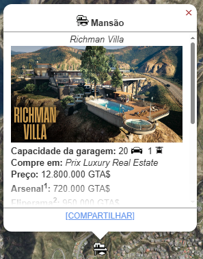
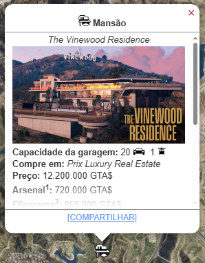
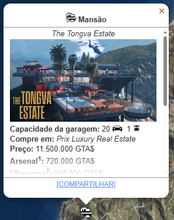

Mansões
As Mansões foram adicionados ao GTA Online com o Atualização "A Safehouse In The Hills", com uma seleção de 3 Locais de mansões disponível no novo site do jogo Prix Luxury Real Estate.
Projetadas com um design de última geração Assistente de IA para auxiliar em tarefas profissionais e pessoais que maximizem seu potencial.
Metodo De Obter
Escolha entre três localizações nos bairros mais exclusivos. Você pode comprar todas as três mansões de uma vez - você não precisa escolher apenas uma mansão.
- Vila Richman: $ 12.800.000 
- A Residência Vinewood: $ 12.200.000 
- A Propriedade Tongva: $ 11.500.000 
Melhorias e Personalizações
Matiz Interior
- Creme (Grátis)
- Hortelã ($ 100.000)
- Lavada ($ 100.000)
- Salmão ($ 100.000)
Padrão Interior
- Palmeiras (Grátis)
- Floral ($ 245.000)
- Batom ($ 245.000)
- Azulejos ($ 245.000)
- Zebras ($ 245.000)
- Seixos ($ 245.000)
Decorção Interior
- Loft Los Santos (Grátis)
- Costa de San Andreas ($ 497.500)
- Vinewood Regency ($ 612.500)
Arsenal
Oferece acesso ao Workshop de Armas Mk II, uma variedade de armas para comprar e um suporte para armas para personalizar o carregamento de armas.
- Custo: $ 720.000
Arcade
Permite ao jogador colocar e jogar gabinetes de arcade próprios do Pixel Emporium.
- Custo: $ 950.000
Pódio de carros
Mostre seu distinto gosto automotivo com um palco interno para um de seus valiosos veículos pessoais.
- Custo: $ 650.000
Oficina de Veiculos
Permite ao jogador modificar Veículos Pessoais dentro da mansão.
- Preço: $ 880.000
Equipe de Segurança
- Preço: $ 1.750.000
Não há paz de espírito que se compare a um esquadrão de mercenários ávidos por atirar, em ternos escuros e óculos escuros táticos, vagando pelos jardins e protegendo seus ativos comerciais.
Esta atualização reduz o risco de seus negócios serem invadidos ou reforça a segurança empresarial existente para eliminar totalmente o risco.
Concierge de IA
Todas as propriedades Prix Luxury contam com um concierge de IA de última geração, o que há de mais moderno em tecnologia de assistência pessoal e serviços empresariais.
- Angel (Grátis - Voz Feminina)
- Haviland (Grátis - Voz Masculina)
- OG (Grátis - Voz Masculina)
Enquanto estiver dentro de sua mansão, você pode usar o Assistente de IA para fazer Festas na Mansão, iniciar Viagem rápida da Mansão para qualquer uma de suas propriedades próprias, e impulsionar a produção em qualquer negócio com Fornecimento ou Produto por 24 horas.
- Viagem Rápida
- Impulso na produção
- Serviço de champanhe
- Festa Privada
- Saída com Veículo Pessoal
- Saída com Veículo de Luxo
- Saída com Helicóptero
Serviçõs de mansão de concierge de IA:
"Exiba um nível personalizado de decadência com sua escolha de acessórios dourados ou cromados. Aplicado em suas grades, âncora, bordas de vigia e heliporto."
- Acessórios Cromados(Incluídos)
- Acessórios de Ouro ($ 750.000)
iluminação
"Destaque-se ou permaneça no escuro: as formas e a tonalidade do seu equipamento de iluminação falam muito sobre suas necessidades de impressionar."
- Verde(Incluído)
- Azul ($ 315.000)
- Rosa ($ 330.000)
- Ouro ($ 350.000)
- Verde Vivaz ($ 500.000)
- Azul Vivaz ($ 525.000)
- Rosa Vivaz ($ 550.000)
- Ouro Bivaz ($ 600.000)
Esquema de Cores
"Do branco imperial ao preto de navio furtivo, temos esquemas de cores que combinam perfeitamente com suas ilusões de grandeza."
- Pacifico (Incluído)
- Náutico ($ 135.000)
- Marinheiro ($ 170.000)
- Comerciante ($ 195.000)
- Imaculado ($ 220.000)
- Azure ($ 300.000)
- Uniforme ($ 315.000)
- Rubi ($ 340.000)
- Mediterrâneo ($ 365.000)
- Vintage ($ 425.000)
- Continental ($ 450.000)
- Navio de Guerra ($ 475.000)
- Comando ($ 495.000)
- Clássico ($ 620.000)
- Intrépido ($ 635.000)
- Voyager ($ 650.000)
Personalização
- O jogador pode selecionar entre 46 bandeiras para colocar na parte traseira.
- O jogador também é capaz de da um nome personalizado par o Iate (até 20 caracteres). O nome padrão é "Galaxy Super Yacht"
- Decoração/Cor: $ Variável
Alterações estéticas (bandeira, iluminação, cores, etc.).
Lucro
O Iate gera lucro apenas através de uma série de missões ativas e, notavelmente, é a única propriedade que gera um custo passivo de manutenção.
▸ Lucro Principal (Ativo): Missões "Uma Vida Super-Iate"
- Função Ativa: Série de seis missões de história iniciadas pelo Capitão Brendan Darcy.
- Rendimento (Primeira Vez): Os pagamentos são fixos e variam de $ 20.000 a $ 30.000 por missão.
- Frequência: As missões podem ser repetidas a qualquer momento.
- Desafio: Não são um método eficiente para grinding de dinheiro devido aos baixos pagamentos por tempo gasto.
▸ Renda Passiva: Não Existe
- Cofre: O Iate não possui um cofre ou qualquer sistema de produção que gere renda passiva.
- Custo de Manutenção: O Iate gera um custo passivo de manutenção (uma conta diária no jogo) que você deve pagar, diminuindo seu lucro líquido geral.
▸ Benefícios Defensivos e de Conveniência
- Defesas Aéreas: Você pode ativar um sistema de defesa que impede que outros jogadores se aproximem ou ataquem o Iate com aeronaves (taxa de $1.000 por minuto).
- Posicionamento: Você pode pagar ao Capitão para mover o Iate para qualquer um dos 12 locais pré-determinados no mapa.
- Status VIP: Serve como um local seguro e de alto status para relaxar ou iniciar serviços de CEO/VIP.
O Super-Iate é um investimento de lazer e conveniência para quem já tem dinheiro de sobra. Ele não oferece retorno financeiro competitivo, mas sim acesso a missões únicas e a funcionalidade de uma base defensiva móvel na água.
Assista a este guia para saber mais sobre a Boate no GTA Online. Este vídeo explica como funciona o esquema e como gerenciar.
l